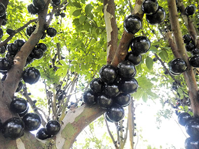
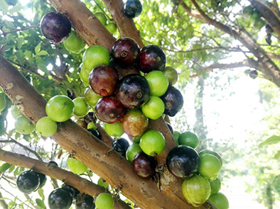

芭樂
芭樂的功效與好處
芭樂（或稱番石榴）適合改善以下症狀的患者： 腹絞痛、腹瀉、糖尿病（Diabetes）、咳嗽、白內障（Cataracts）、高血脂（High cholesterol）、心臟病（Heart disease）、癌症。

芭樂營養成分、功效原理
目前尚未有足夠的確切研究，能明確指出芭樂作為藥用的功效原理，如果想知道更詳盡的資訊，請諮詢醫師。不過有些研究指出，芭樂富含豐富的維他命C、纖維，以及其他具抗氧化功效的物質；由於化學元素或化合物如果與氧結合，就會「氧化」，而抗氧化劑則可以減緩，甚至是阻擋氧化對人體造成的危害。另外，芭樂葉中也含具抗氧化等功效的化學物質，但是目前尚未確定，芭樂對於不同身體健康狀況之影響。

芭樂的禁忌與注意事項
如果遇到以下狀況，請先和醫師、藥師諮詢，以確定是否適合服用芭樂：
1.懷孕或哺乳中：如果正在懷孕或哺乳，您應該只服用醫師建議的藥物。（更多懷孕相關資訊請參考：懷孕專區）
2.正在服用其他藥物，包括不須處方、自行購買的成藥或指示藥物。
3.對芭樂、其他藥物或任何其他中藥任何成分過敏。
4.有其他的疾病、缺陷或病症。
5.有其他類型的過敏，例如對食物、染劑、防腐劑或動物過敏。
使用芭樂(水果類)的規定沒有使用一般藥物的規定嚴格，需要更多研究來確認其安全性，使用前必須衡量服用芭樂的好處和風險，進一步資訊應洽詢草藥醫師或醫師。
資料來源: